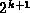
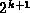
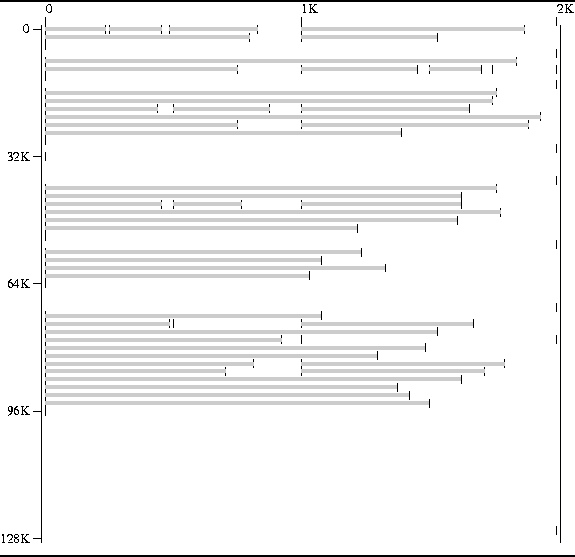
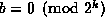
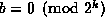
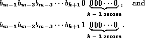
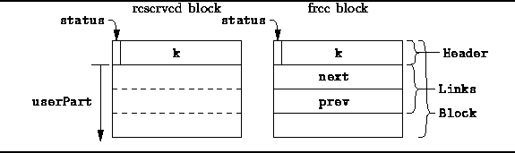

Data Structures and Algorithms
with Object-Oriented Design Patterns in C++
Data Structures and Algorithms
with Object-Oriented Design Patterns in C++The preceding sections describe two storage pool implementations that both use a linear list to keep track of the free areas. When the singly-linked list is used, the linear list is kept sorted by address; when the doubly-linked list is used, the order of the areas in the list is essentially random.
Each time an area is to be reserved, the free lists are searched in order to find an area that is sufficiently large to satisfy the request. Since there is no direct relationship between the size of an area and its position in the free list, the search has worst-case running time that is O(l), where l is the length of the free list. And in the worst case l is O(n), where n is the number of blocks in the storage pool.
In this section we present a storage pool implementation, called a buddy system , that uses more than one free list. All of the areas in a given free list have the same size and there is a separate free list for each available size of area. As a result a suitable free area can be found quickly.
Given a storage pool of size N bytes, we would require N free lists altogether if we were to place no restriction the allowable size of an area. This is clearly infeasible. Instead we require that N is a power of two, i.e., for some positive integer m. Furthermore, the size of each area in the pool must also be a power of two. As a result, we only need m+1 free lists, since the allowed sizes of an area (in bytes) are
The key feature of a buddy system is that when a request is made
for an area of size  for some k less than m,
we first look in the corresponding free list for an area with the correct size.
Notice that if there are no areas of size
for some k less than m,
we first look in the corresponding free list for an area with the correct size.
Notice that if there are no areas of size  left,
we can obtain one by splitting an area of size  in two.
And if there are no areas of size left,
we can obtain one of those by splitting an area of size in two,
and so on.
left,
we can obtain one by splitting an area of size  in two.
And if there are no areas of size left,
we can obtain one of those by splitting an area of size in two,
and so on.
The two areas obtained when a larger
area is split in two are called buddies.
Whenever an area is freed,
we check to see if its buddy is also free.
If an area of size  and its buddy are both free,
they can be combined into a single area of size .
and its buddy are both free,
they can be combined into a single area of size .
Of course, the user does not always need an an amount of storage that is exactly a power of two. In those situations where it is not, we shall allocate an amount of memory that is the smallest power of two no less than the amount requested.
Figure  shows a memory map of
a storage pool managed using the buddy system.
The reserved areas in Figure are exactly the same as those
shown in Figure .
Figure shows an important characteristic of the buddy pool:
An area of size
shows a memory map of
a storage pool managed using the buddy system.
The reserved areas in Figure are exactly the same as those
shown in Figure .
Figure shows an important characteristic of the buddy pool:
An area of size  bytes is always aligned on a
bytes is always aligned on a  byte boundary.
E.g., all 1KB areas are aligned on 1KB boundaries.
I.e., they begin at 0KB, 1KB, 2KB, ...
byte boundary.
E.g., all 1KB areas are aligned on 1KB boundaries.
I.e., they begin at 0KB, 1KB, 2KB, ...

Figure: Memory Map of a Buddy System Storage Pool
Let b be the offset from the start of the pool
(in bytes) of an area of size  .
Then for b to be aligned on a
.
Then for b to be aligned on a  byte boundary means that
.
In other words, the binary representation of the number b has the form
byte boundary means that
.
In other words, the binary representation of the number b has the form

where  is the
is the  bit
in the representation of b.
bit
in the representation of b.
If we take the block of size  at offset b and split
it into two blocks of size ,
the offsets of the two blocks which result are
at offset b and split
it into two blocks of size ,
the offsets of the two blocks which result are

I.e., the offsets of the buddies of size  differ in only the
differ in only the  bit position.
This gives us a very simple way to determine the position of the
buddy of a given area.
I.e., given the offset of a buddy of size
bit position.
This gives us a very simple way to determine the position of the
buddy of a given area.
I.e., given the offset of a buddy of size  is b,
the offset of the buddy is given by
is b,
the offset of the buddy is given by
Fortunately, it is quite simple to compute Equation
since all that we need to do is toggle the  bit
of the binary representation b.
This can be done using the
bitwise exclusive-or operation
as the following function definition shows:
bit
of the binary representation b.
This can be done using the
bitwise exclusive-or operation
as the following function definition shows:
unsigned int Buddy (unsigned int b, unsigned int k)
{ return b ^ (1 << (k - 1U)); }
As before, we implement the storage pool as an array of Blocks.
The structure of a Block is shown in Figure .
A sequence of contiguous blocks in the array constitutes and area.
This time the size (in bytes) of every area in the pool
is an integer power of two.
The first block in each area is used to keep track the entire area.

Figure: BuddyPool::Block Structure Layout
The structure of the block is quite similar to that used in the implementation of the DoublyLinkedPool class. I.e., the header is comprised of two parts: A single bit which indicates whether the area represented by the block is reserved or free and a field called k which specifies the size of the area. I.e., the size of the block is bytes.
The free lists are implemented as doubly-linked lists. Therefore, a free block contains two pointers, prev and next, which point to the previous and next areas (respectively) in the free list.
 Copyright © 1997 by Bruno R. Preiss, P.Eng. All rights reserved.
Copyright © 1997 by Bruno R. Preiss, P.Eng. All rights reserved.